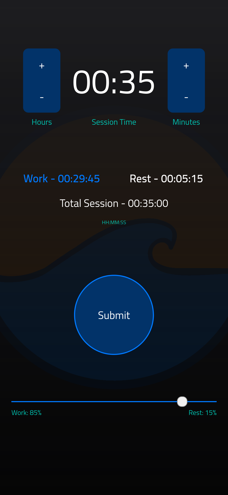

Easeout
A timer app that allows a user to control their "productivity cycles" based on the pomodoro technique. The user sets the time they want each session to last. Each session is composed of a work time window and a rest time window. The app allows the user to visualize how much they are dedicating to each portion of the session. The motivation for this app was to provide a way for people to either slow down (or ramp up) how much time they dedicate to work or rest. A future version of the app will have a productivity plan that modifies the session workload according to a user's needs.

Tech Stack
- Vue.js 3